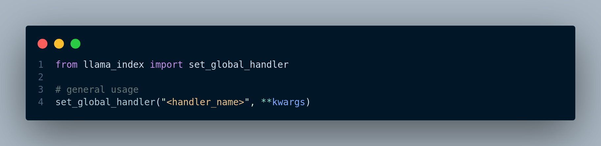
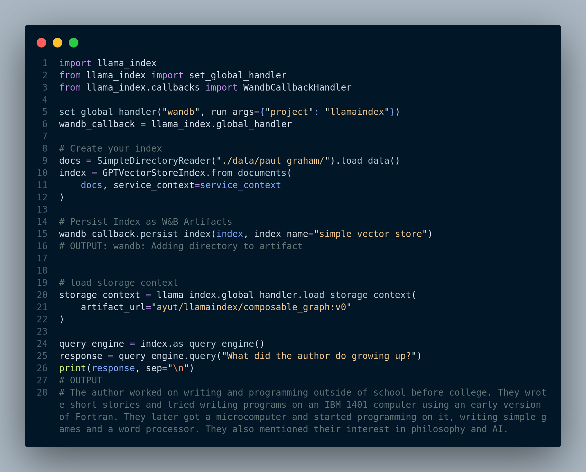
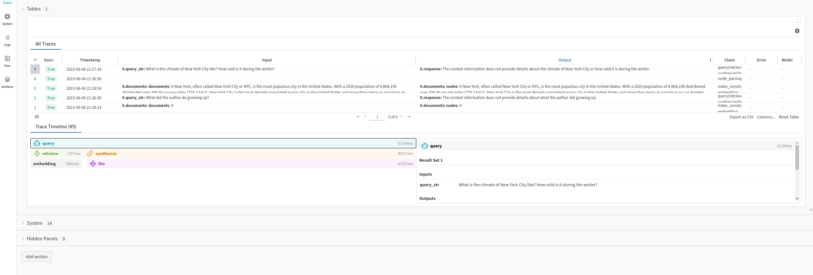
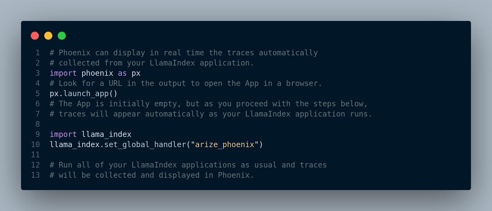
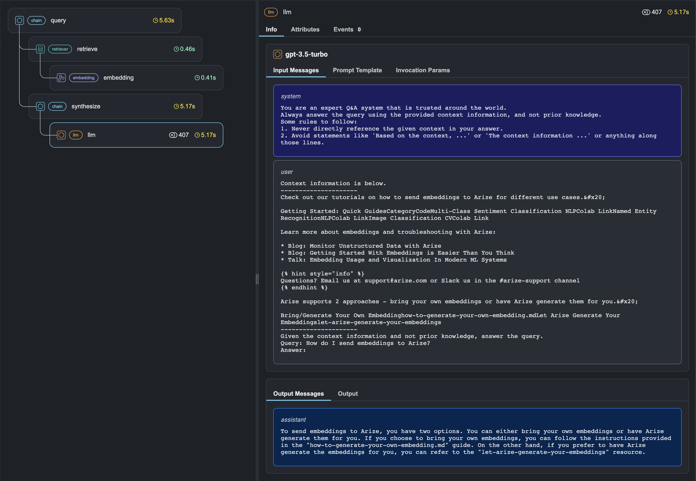
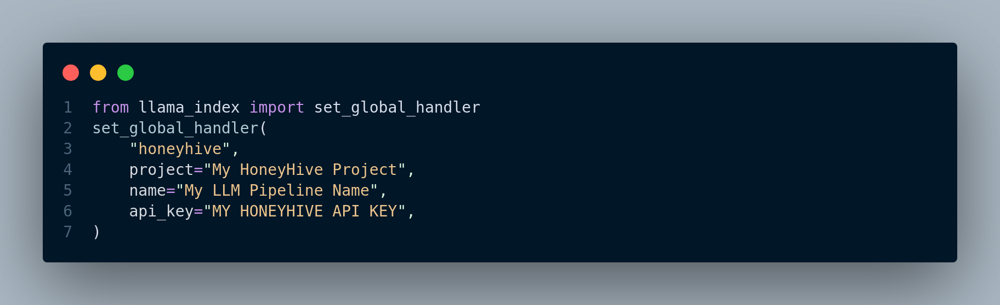
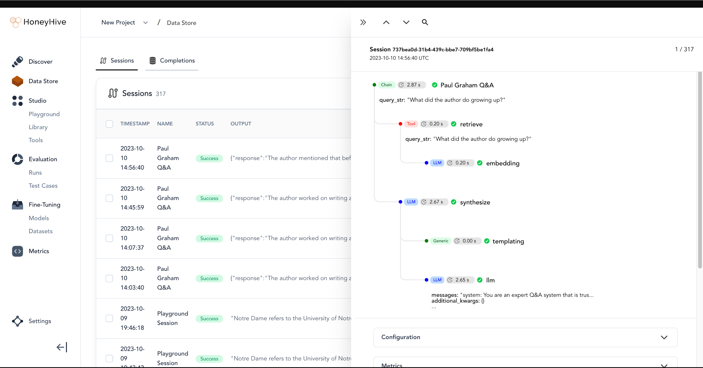

5 Observability Tools for RAG
An observability tool is a software or platform designed to help monitor, analyze, and gain insights into the performance, behavior, and health of a complex system, such as a machine learning model, a RAG system, or a software application. These tools provide visibility into various aspects of a system, allowing operators, administrators, and developers to understand how the system operates and to detect and troubleshoot issues.
Key components and features of an observability tool typically include:
Data Collection: Observability tools collect data from various sources within the system. This data can include metrics (e.g., CPU usage, memory usage), logs, traces, events, and more. The broader the range of data collected, the more comprehensive the observability.
Storage: Data collected by the tool is stored for analysis and historical reference. The storage can be in the form of time-series databases, log repositories, or other storage solutions designed to handle large volumes of data.
Analysis: Observability tools provide analytical capabilities to process and make sense of the collected data. This includes querying data, aggregating metrics, and identifying patterns or anomalies.
Visualization: The tools offer visualization capabilities to create graphs, charts, dashboards, and reports that make it easier for users to interpret data. Visualizations help spot trends, issues, and performance bottlenecks.
Alerting: Many observability tools allow users to define alerting rules. When certain conditions are met, the tool sends notifications, enabling operators to respond to issues promptly.
Tracing: For distributed systems, tracing is important. Observability tools often provide tracing features to track requests as they move through various services or components of a system. This helps pinpoint performance bottlenecks and issues.
User Interface: A user-friendly interface is essential for interacting with the data and insights generated by the observability tool. It should allow users to explore data, set up alerts, and visualize information.
Integration: Observability tools should integrate with various components of the system, such as applications, databases, containers, and cloud services, to capture relevant data.
Scalability: The tool should be able to scale with the system it monitors. It needs to handle growing data volumes and provide insights without compromising performance.
Customization: Users should be able to customize the tool to meet the specific needs of their system. This includes defining custom dashboards, alerts, and data collection methods.
There are several observability tools for RAG based systems. Frameworks like LlamaIndex also provides an easy way to integrate some of these tools with RAG application. This enable us to:
- View LLM prompt inputs and outputs
- Make sure that all the components such as embedding models, LLMs and vector databases are working as expected
- View indexing and querying traces
In order to integrate observability tools with LlamaIndex, we simply need to do the following, Figure 5.1:

5.1 Weights & Biases Integration with LlamaIndex
Weights & Biases is a machine learning platform that empowers developers to enhance their models efficiently. It provides versatile tools for experiment tracking, dataset versioning, model evaluation, result visualization, regression identification, and seamless collaboration with peers.
The code depicted in Figure 5.2 shows how to integrate W&B with LlamaIndex. For complete example, please see here.

We can even see the logs as shown in Figure 5.3.

If we go the W&B website and login, we can see all the details, Figure 5.4 displays our project including charts, artifacts, logs, and traces.

5.2 Phoenix Integration with LlamaIndex
Phoenix is an observability tool designed for LLM applications, offering insight into their inner workings. It provides a visual representation of query engine calls and highlights problematic execution spans based on factors like latency and token count, aiding in performance evaluation and optimization.
Figure 5.5 shows the general usage pattern to use Phoenix.

When we run queries, we can see the traces in real time in the Phoenix UI. Figure 5.6 illustrates the Phoenix UI for a RAG application.

A complete example of tracing a LlamaIndex RAG application using Phoenix is available at this link.
5.3 HoneyHive Integration with LlamaIndex
HoneyHive is a framework that can be used to test and evaluate, monitor and debug LLM applications. It can be seamlessly integrated as displayed in Figure 5.7 into LlamaIndex applications.

The HoneyHive dashaboard looks like Figure 5.8 below:

For a complete guide, see this tutorial.
Other observability tools we can use include Truera, databricks, and Elastic observability among many other tools that are available.
6 Ending Note
In concluding our journey through the pages of “A Practical Approach to Retrieval Augmented Generation Systems,” we hope you have gained valuable insights into the world of Retrieval-Augmented Generation. As the landscape of AI continues to evolve, RAG systems present an exciting intersection of retrieval and generation technologies, with immense potential across a multitude of industries and applications. With each chapter, we’ve delved deeper into the core principles, strategies, and techniques that underpin the development and implementation of RAG systems.
Remember that the field of AI is dynamic and ever-changing. While this book has aimed to provide a comprehensive understanding of RAG, new developments and possibilities are always on the horizon. We encourage you to continue exploring, experimenting, and innovating in the realm of Retrieval-Augmented Generation. Your journey doesn’t end here; it’s just the beginning.
Thank you for joining us on this transformative adventure into the heart of AI’s future.
6.1 Acknowledgements
We would like to express our gratitude to the teams behind LlamaIndex, LangChain, and Haystack for their invaluable contributions to the field of Retrieval-Augmented Generation (RAG). Their comprehensive documentations and tutorials have been instrumental in our journey, allowing us to learn from their expertise and leverage the fascinating tools they have built.